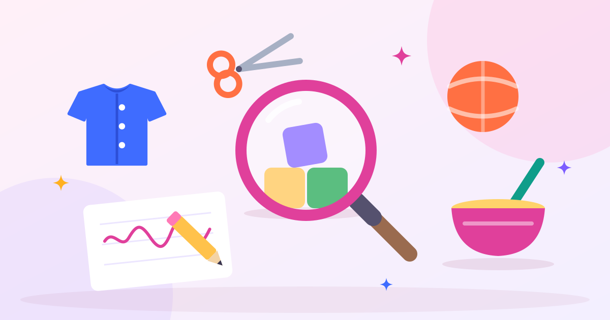
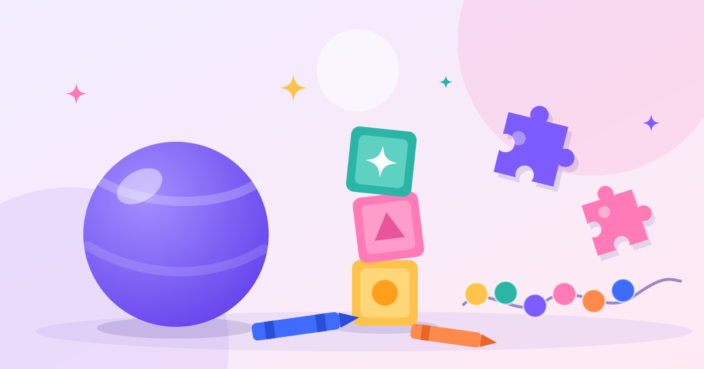
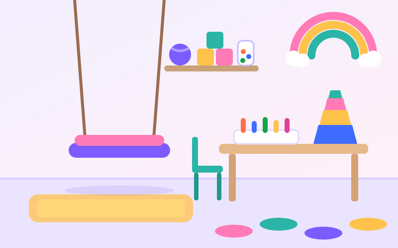
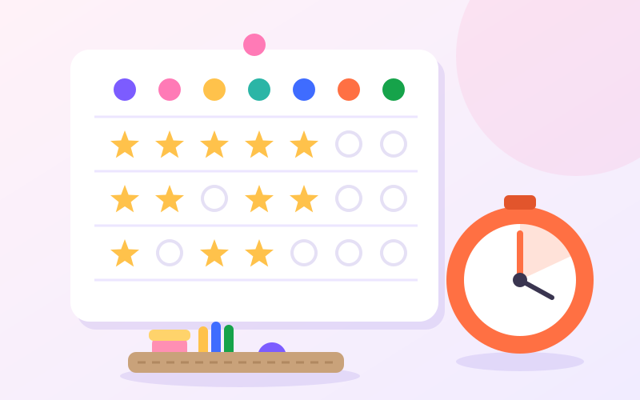

نشانهها و ارزیابی
راهنمای والدین
کاردرمانی کودکان به کودک کمک میکند کارهای روزمرهی سنّ خودش را — از بازی و غذا خوردن تا لباس پوشیدن و نوشتن — با استقلال و اعتمادبهنفس بیشتری انجام دهد. در این راهنما میخوانید کاردرمانی دقیقاً چه میکند، چه کودکانی به آن نیاز دارند و جلسهها چطور پیش میرود.

واژهی «کار» در کاردرمانی به معنای شغل نیست؛ یعنی هر فعالیتی که زندگی روزمره را میسازد. «کار» یک کودک اینهاست: بازی کردن، یاد گرفتن در مدرسه، مراقبت از خودش — غذا خوردن، لباس پوشیدن، مسواک زدن — و بودن در کنار دیگران.
کاردرمانگر کودک بررسی میکند چه چیزی مانع انجام این کارها شده است: ضعف دست، مشکل در توجه، حساسیت به صدا و لمس، ناهماهنگی حرکتی یا چیز دیگری. بعد همان مهارت گمشده را، بیشتر از راه بازی، قدمبهقدم میسازد تا کودک بتواند کار را خودش انجام دهد.
در ایران کاردرمانی کودکان معمولاً به دو شاخه تقسیم میشود: کاردرمانی جسمی که روی قدرت عضله، دامنهی حرکت و تعادل کار میکند، و کاردرمانی ذهنی که روی مهارتهایی مثل توجه، حافظه، ادراک، دستورزی و رفتار تمرکز دارد. بسیاری از کودکان به ترکیبی از هر دو نیاز دارند و جلسهی ارزیابی مشخص میکند وزن هر کدام چقدر باشد. تفاوت کاردرمانی با گفتاردرمانی و روانشناسی کودک را در سوالات متداول توضیح دادهایم.
هر کودک برنامهی خودش را دارد، اما بیشتر هدفهای درمان در یکی از این حیطهها قرار میگیرد:

کاردرمانی فقط برای کودکانی نیست که تشخیص مشخصی دارند. مراجعهکنندهها معمولاً در یکی از این دو گروهاند:
هر کودک با سرعت خودش رشد میکند و دیدن یکی دو مورد از این فهرست جای نگرانی ندارد. اما اگر چند مورد با هم و برای مدتی طولانی دیده میشود، یک جلسهی ارزیابی میتواند تصویر روشنی بدهد. فهرست کاملتر، حیطه به حیطه، در آیا کودکم به کاردرمانی نیاز دارد؟ آمده است.
کاردرمانی همیشه با ارزیابی شروع میشود؛ بدون آن، تمرینها حدساند. جلسهی ارزیابی معمولاً این مراحل را دارد:
جلسهی کاردرمانی از بیرون شبیه بازی است، اما هر بازی هدف مشخصی دارد: تاب خوردن روی تاب سکویی به تنظیم سطح هوشیاری و توجه کمک میکند، برداشتن مهره با انبرک گرفتن دقیق انگشتها را تقویت میکند و مسیر مانع، برنامهریزی حرکتی را تمرین میدهد.
کاردرمانگر سختی هر فعالیت را طوری تنظیم میکند که «بهاندازه» باشد: آنقدر سخت که کودک رشد کند و آنقدر آسان که موفق شود. موفقیت، انگیزهی جلسهی بعد را میسازد.
جلسهها معمولاً ۴۵ تا ۶۰ دقیقه و یک یا دو بار در هفتهاند. والدین بخشی از جلسه را میبینند یا در پایان آن، خلاصهی کار و تمرینهای خانه را میگیرند. برای خانوادههایی که دور از کلینیکاند، بسیاری از هدفها در کاردرمانی ذهنی کودکان آنلاین هم قابل پیگیری است.
جلسهی درمان یک یا دو ساعت از هفته است؛ بقیهی هفته کودک در خانه است. به همین دلیل، پیشرفت بیش از هر چیز به تمرینهای کوتاه و منظم خانه بستگی دارد.

برای شروع، ۱۵ فعالیت کاردرمانی برای تقویت مهارتهای حرکتی ظریف را ببینید؛ همه با وسایل خانه انجام میشوند.
پاسخ صادقانه این است که به هدفها، سن کودک و پیوستگی تمرین خانه بستگی دارد. بعضی هدفها، مثل بهتر شدن گرفتن مداد، ممکن است در چند ماه به دست بیایند. برای کودکانی که اختلال رشدی دارند، درمان معمولاً طولانیتر است و هر چند ماه یک بار دوباره ارزیابی میشود تا هدفهای تازه تعیین شود.
بهجای شمردن جلسهها، هدفها را دنبال کنید: هر هدف باید آنقدر روشن باشد که هم شما و هم کاردرمانگر بتوانید بگویید به آن رسیدهاید یا نه.
این مقاله برای آگاهی والدین نوشته شده و جای ارزیابی تخصصی را نمیگیرد. اگر دربارهی رشد کودکتان نگرانی دارید، با پزشک کودک یا کاردرمانگر مشورت کنید.